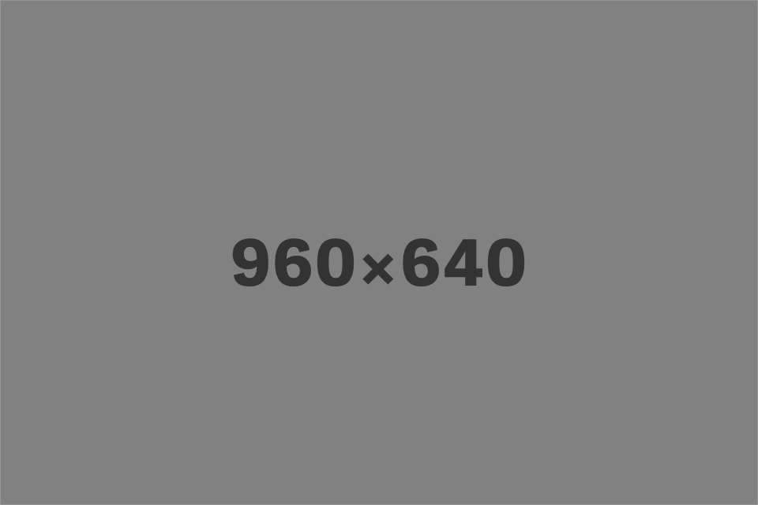

<!doctype html>
<html lang="en" class="no-js">

<head>
<meta charset="utf-8">
<title>#</title>
<meta name="description" content="">
<meta name="viewport" content="width=device-width, initial-scale=1.0">

<link rel="shortcut icon" href="favicon.ico" type="image/x-icon" />

<link rel="stylesheet" href="css/main.css">

<!-- Development Version of modernizr.js – use custom build for production -->
<script src="js/modernizr-custom.js"></script>

	
</head>

<body>

<div id="wrap">

<div id="main">

<div class="grid" data-isotope='{ "itemSelector": ".grid-item", "layoutMode": "masonry" }'>	
  <!-- <div class="grid-item grid-item--width2"></div> -->
  <div class="grid-item"></div>
  <div class="grid-item"></div>
  <div class="grid-item"></div>
  <div class="grid-item"></div>
  <div class="grid-item"></div>
  <div class="grid-item"></div>
  <div class="grid-item"></div>
  <div class="grid-item"></div>
</div>

</div> <!-- #wrap -->

<!-- Isotope -->
<script src="js/isotope.pkgd.min.js"></script>


<script src="js/jquery-2.2.3.min.js"></script>

<!--
<script>
$(window).load(function(){ 
  
    var $container = $('.grid'); 
    $container.isotope({ 
        filter: '*', 
        animationOptions: { 
            duration: 750, 
            easing: 'linear', 
            queue: false, 
        } 
    }); 
  
});
</script>
-->

</body>
</html>
